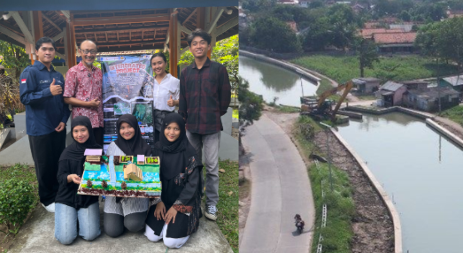
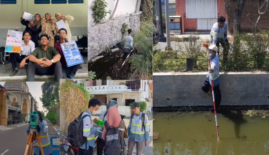

Tentang Saya
Halimah merupakan mahasiswa tingkat akhir Teknik Konstruksi Bangunan Air yang memiliki pengalaman magang dalam proyek infrastruktur, mencakup sistem manajemen distribusi air dan konstruksi bangunan gedung (teknik sipil), dengan minat yang kuat pada infrastruktur air, manajemen proyek, dan pelaksanaan konstruksi. Memiliki pengalaman dalam analisis sistem distribusi air, termasuk deteksi kebocoran, pemantauan debit dan tekanan, serta optimasi jaringan perpipaan. Selain itu, saya juga berpengalaman dalam konstruksi bangunan gedung, seperti pengendalian mutu (quality control), estimasi kuantitas material, dan koordinasi di lapangan. Halimah aktif terlibat dalam kegiatan organisasi, kompetisi, dan kegiatan relawan yang telah mengembangkan kemampuan kepemimpinan, komunikasi, dan kerja sama tim.
Pendidikan
🎓 Institut Teknologi Sepuluh Nopember
2022 – 2026- D4 Teknik Infrastruktur Sipil
- Fokus studi Infrastruktur Air dan Sistem Distribusi
🏫 SMK Negeri 26 Jakarta
2018 – 2022- Konstruksi Gedung, Sanitasi, dan Perawatan
Pengalaman Magang
💧 PT PAM JAYA Jakarta
Juli – Desember 2025


- Monitoring tekanan & debit jaringan distribusi air
- Analisis kebocoran dan tekanan rendah
- Pemetaan jaringan menggunakan ArcGIS
- Flushing, pengecekan valve, administrasi teknis
🏗️ PT Wijaya Karya Bangunan Gedung Tbk
April 2021 – Februari 2022


- Checklist defect pekerjaan arsitektur & finishing
- Pemeriksaan mutu lapangan
- Perhitungan volume pekerjaan
- Administrasi proyek
🎥 Video Magang WIKA
Proyek

🏆 Proyek Terintegrasi 2025
Pemulihan saluran irigasi Tarum Utara Barat akibat erosi dan sedimentasi.

🌧️ Drainase Lembah Harapan
Analisis hidrologi, hidrolika, desain saluran, kolam detensi, RAB dan RKS.

📊 Lomba Tender Nasional
Menyusun RAB, BOQ, AHSP, time schedule, dokumen tender.

🌉 KBGI / KJI 2024
Drafter AutoCAD desain jembatan kompetisi nasional.

🏠 Rumah 2 Lantai
Desain rumah 2 lantai dan estimasi biaya proyek.
Skill
Software
AutoCAD, ArcGIS, EPANET, SketchUp, Microsoft Excel, Word, PowerPoint, SAP2000 (basic), dan lainnya
Hard Skill
Analisis Distribusi Air, Analisis Tekanan Jaringan, RAB, BOQ, Dokumen Tender, Quality Control, Pengawasan Lapangan, Estimasi Biaya
Soft Skill
Leadership, Teamwork, Komunikasi, Problem Solving, Analitis, Adaptif, Manajemen Waktu
Prestasi
- Juara 1 Tender Nasional Universitas Gorontalo
- Juara 2 Tender Warriors Competition UNESA
- Harapan 2 Tender Nasional UMP
- Awardee Beasiswa Adaro
Organisasi dan aktivitas
- HMDS ITS – Kepala Divisi Akademik
- Jamaah Masjid Al-Azhar ITS – Sekretaris
- Freelance MC dan Moderator
- Dvillage 13th Edition-Himpunan Mahasiswa Diploma Sipil – Kepala Sub Acara Lomba Beton Nasional
- Dvillage 12th Edition-Himpunan Mahasiswa Diploma Sipil – Staff Acara Lomba Tender Nasional
- Gema Ramadhan Teknik Infrastruktur Sipil 1445H (GRADASI 1445H) – Sekretaris
- Gerakan Sosial FOSIF x JMAA (GESSIMA) – Kakak Pendamping
- VONDASI 5.0 ITS – Kakak Pendamping (Kestari)
Kontak
📧 Email: snhalimaah@gmail.com
📱 WhatsApp: 089699338424
📸 Instagram: @halimahstn
💼 LinkedIn: linkedin.com/in/sitinurhalimaah